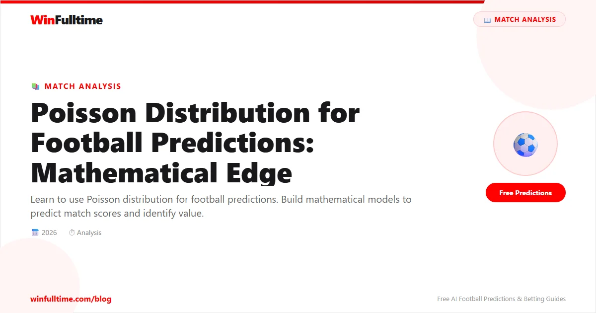

The Poisson distribution is a mathematical model that predicts the probability of events occurring over a fixed time period. In football, it can predict goal distributions and help you find value in the odds.
Poisson models the probability of a given number of events (goals) occurring when the average rate is known. It assumes goals occur independently and at a constant average rate.
Use xG stats to determine each team's average goals per game. Sources: StatsBomb, Understat, SofaScore.
Use the Poisson formula to calculate probabilities for 0, 1, 2, 3+ goals.
P(0 goals) = e^-1.7 � 1.7^0 / 0! = 18.3%
P(1 goal) = e^-1.7 � 1.7^1 / 1! = 31.1%
Calculate probabilities for every scoreline (0-0, 1-0, 2-1, etc.) by multiplying home goal probability � away goal probability.
Add up relevant scores to get probabilities for:
| Outcome | Your Prob | Bookmaker | Value? |
|---|---|---|---|
| Over 2.5 | 58% | 1.83 (54.6%) | ? Yes |
| Man City win | 52% | 1.75 (57%) | ? No |
Use our predictions with xG data to start building your Poisson model.
Yes, for probability estimation. Poisson is the foundation of most professional betting models:
Start with simple xG inputs and improve your model over time.
Support WinFulltime — your donations keep this website running and all predictions free.
Donate on Ko-fiGenerate optimized accumulator combinations from today's AI-powered predictions. Set your target odds and get instant ticket suggestions.
Free Ticket Builder →18+ Only • Please Gamble Responsibly
All content on WinFulltime is for informational and entertainment purposes only. Betting involves financial risk. If you or someone you know has a gambling problem, please seek professional help.